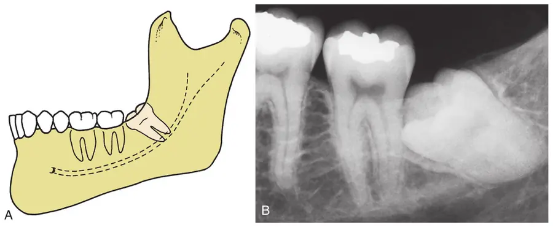
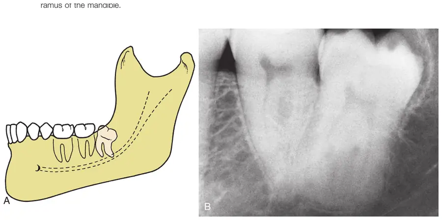

نسخه استخراجشده؛ ترجمه یا تأیید علمی انجام نشده است. وضعیت: captured
۳) عمودی. محور طولی دندان نهفته موازی محور طولی مولر دوم است. دومین شیوع بیشتر را دارد: حدود ۳۸٪ از کل نهفتگیهای مولر سوم پایین. و از نظر سهولت برداشتن سوم است — یعنی پس از مزیوانگولار و افقی.

و ویژگی مهمش: نهفتگی عمودی اغلب در سطح خلفیاش با استخوان راموس قدامی مندیبل پوشیده است.
۴) دیستوانگولار — دشوارترین زاویه. محور طولی مولر سوم به سمت دیستال یا خلفی و دور از مولر دوم زاویه دارد.
چرا دشوارترین است: مسیر خروج این دندان به داخل راموس مندیبل میرود، پس برداشتنش مداخلهی جراحی قابلتوجهی میطلبد. و سطح اکلوزال نهفتگی دیستوانگولار معمولاً درون راموس مندیبل مدفون است و برای کشیدن به برداشت قابلتوجه استخوان نیاز دارد. شیوعش کم است: تنها حدود ۶٪ از کل مولرهای سوم نهفته.
و یک نکته که فقط دربارهی نهفته نیست: مولر سوم رویشیافته هم میتواند در وضعیت دیستوانگولار باشد. وقتی اینطور شد، برداشتنش بهمراتب دشوارتر از سایر دندانهای رویشیافته است — دلیلش این است که ریشهی مزیال مولر سوم بسیار نزدیک ریشهی مولر دوم است.
افزون بر رابطهی زاویهی محورهای مولر دوم و سوم، دندانها میتوانند در جهت باکال، لینگوال یا پالاتال هم زاویه داشته باشند.

و یک هشدار آناتومیک در همینجا: هنگام رویکرد به مولرهای سوم پایین، باید احتمال حضور عصب لینگوالِ بالانشسته (high-riding) در نظر گرفته شود. همین احتمال است که رویکرد باکال را مناسب نگه میدارد، حتی وقتی دندان به سمت لینگوال متمایل است.
نهفتگی ترنسورس — نادر. یعنی دندانی که در وضعیت کاملاً افقی در جهت باکولینگوال رویش یافته است. سطح اکلوزال دندان میتواند رو به باکال یا رو به لینگوال باشد.
چگونه تعیین میشود: برای تعیین دقیق ورژن باکال یا لینگوال، باید رادیوگرافی اکلوزال عمود گرفته شود یا CBCT تهیه گردد.
ولی معمولاً لازم نیست — چون جراح میتواند این تشخیص را در همان اوایل عمل بدهد، و موقعیت باکال یا لینگوال دندان تأثیر زیادی بر رویکرد جراحی ندارد.